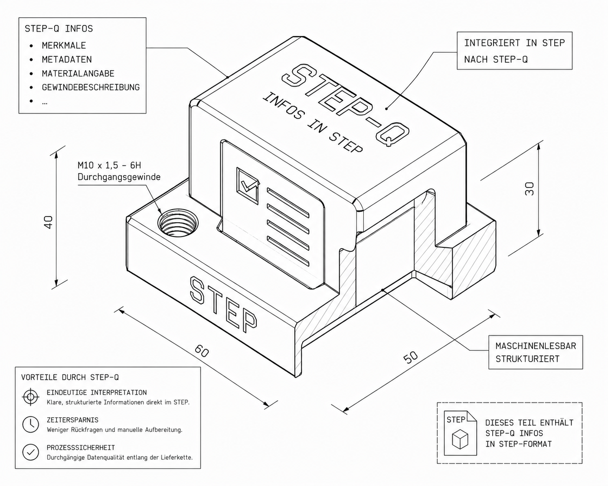
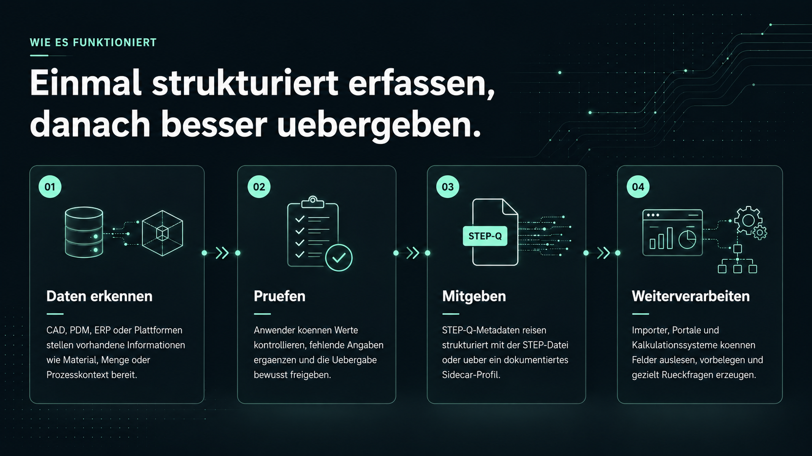

Manuelle Uebertragung
Anfrage- und Angebotsprozesse bleiben schwer automatisierbar, obwohl viele Informationen bereits existieren.
Automatisierbarer RFQ-Kontext fuer STEP-Dateien
Warum werden Fertigungsdaten noch abgetippt, wenn sie mit der STEP-Datei reisen koennen? STEP-Q strukturiert Material, Menge, Prozessannahmen und weitere RFQ-Metadaten so, dass Menschen und Systeme dieselben Anfragegrundlagen verstehen.

Warum STEP-Q?
STEP ist ein etablierter Standard fuer CAD-Geometrie und produktbezogene Daten. STEP-Q ergaenzt diesen Austausch um eine kleine, dokumentierte RFQ-Metadatenschicht: Material, Fertigungsabsicht, Mengen, Oberflaechen, Toleranzen, Pruefanforderungen und weitere Informationen, die fuer Kalkulation und technische Uebergabe relevant sind.
Anfrage- und Angebotsprozesse bleiben schwer automatisierbar, obwohl viele Informationen bereits existieren.
Konstruktion, Einkauf, Fertigung und externe Partner klaeren Details erneut, statt Daten direkt zu nutzen.
CAD, Kalkulation, Plattformformulare und Fertigungssysteme arbeiten mit getrennten Datenlogiken.
Technische Merkmale werden unterschiedlich interpretiert und Angebotsannahmen bleiben schwer nachvollziehbar.
Was wird strukturiert?
STEP-Q bildet Informationen ab, die heute haeufig manuell interpretiert oder aus Begleitdokumenten zusammengesucht werden muessen.
Eine Bohrung kann geometrisch sichtbar sein. Fuer Angebot und Fertigung ist aber relevant, welches Gewinde vorgesehen ist, wie tief es sein soll, ob es funktional kritisch ist und welche Pruefung erwartet wird.

Fuer wen?
STEP-Q soll genau dort helfen, wo CAD-Informationen in Anfrage, Angebot, Arbeitsvorbereitung oder Softwarelogik erneut interpretiert werden. Entwicklungspartner helfen, diese Uebergaenge mit echten Daten belastbar zu machen.
Fertigungsabsichten strukturiert mitgeben, statt sie spaeter in E-Mails, Zeichnungen oder Formularen zu verlieren.
Rueckfragen reduzieren, Angebotsannahmen nachvollziehbarer machen und relevante Felder schneller auswerten.
Anfrageformulare automatisch vorbelegen und unvollstaendige Datensaetze gezielter sichtbar machen.
CAD-, CAM-, ERP- und PDM-Schnittstellen um einen klaren RFQ-Kontext fuer downstream Prozesse erweitern.
Tooling Preview
Fuer den ersten Website-Entwurf zeigen wir die Richtung: STEP-Datei auswaehlen, Metadaten pruefen, STEP-Q-konform schreiben und in Zielsysteme uebergeben. Echte Upload-, Viewer- oder Verarbeitungsfunktionen werden separat bereitgestellt.
holydraft
holydraft initiiert STEP-Q und entwickelt das Oekosystem dahinter: Spezifikation, Anwendungsfaelle, Referenzprozesse, Importer-/Exporter-Konzepte und technische Beratung fuer CAD-, PDM-, ERP- und Plattformintegrationen.
Viele Uebergaben funktionieren heute nur, weil Menschen technische Informationen haendisch sortieren, pruefen und uebertragen.
STEP-Q soll genau dort strukturieren, wo Daten bereits vorhanden sind, aber noch nicht sauber in Folgeprozessen ankommen.
Das Ziel ist weniger Reibung zwischen Idee, Konstruktion, Anfrage, Kalkulation und Fertigung.
FAQ
AP242 ist stark und umfassend fuer Produktdaten. STEP-Q ersetzt AP242 nicht, sondern ergaenzt STEP-basierte Prozesse gezielt um praxisnahe RFQ-Metadaten: Fertigungsabsicht, anfragerelevante Informationen und Felder fuer Kalkulation, Einkauf, Arbeitsvorbereitung und Plattformprozesse.
STEP-Q soll Materialien nicht automatisch erraten. Stattdessen wird eine definierte Bezeichnung bewusst zugeordnet. Interne Materiallogiken koennen ueber Mapping-Tabellen oder Uebersetzungsdatenbanken mit STEP-Q-konformen Daten verbunden werden.
Nein. STEP-Q macht bereitgestellte Informationen strukturierter und nachvollziehbarer, ersetzt aber keine fachliche Pruefung. Die Verantwortung fuer richtige, vollstaendige und freigegebene Daten bleibt bei Ersteller, Exporter, Importeur und den jeweiligen Prozessen.
Viele STEP-Q-relevante Informationen existieren bereits im CAD-Modell, in Parametern oder internen Systemen. Ein Exporter kann sie auslesen, zur Pruefung anzeigen und strukturiert mitgeben. Dadurch sinken spaeter Rueckfragen, manuelle Uebertragung und Fehlerwahrscheinlichkeit.
STEP-Q ist auf versionierte Weiterentwicklung ausgelegt. Neue Werte koennen ergaenzt werden; Importer koennen ueber Versionen, Mapping- und Alias-Logiken nachvollziehen, nach welcher Spezifikation eine Datei erstellt wurde.
Nicht zwingend. Unterstuetzt ein Portal oder ein Anfrageprozess STEP-Q, koennen Felder wie Material, Menge, Verfahren, Oberflaeche oder Fertigungsabsicht aus der Datei uebernommen, geprueft und ergaenzt werden.
STEP-Q kann mit Vollstaendigkeitsprofilen arbeiten. Ein Profil legt fest, welche Angaben fuer einen Anwendungsfall benoetigt werden. Fehlende Pflichtinformationen koennen dann sichtbar gemacht oder als unvollstaendig markiert werden.
Verantwortung